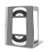

| The "Software" tab lets you download the very latest Kinovea version. Click the "Download" button, choose a directory on your hard drive to put the new install program into. Launch the download by clicking OK. |
| User guides can improve and get corrected, new translations can become available. Check the box relating to the manuals you want to download and click "Download". |
|  | Help Videos available can also be modified and completed by new ones. Check boxes of videos that interest you and click "Download". Videos for which you already have the latest version do not appear in the list. |